This device cannot display Java animations. The above is a substitute static image
1. A cylinder
The applet initially shows a yellow area that is bounded by the two curves f (x) = 2 and g(x) = 0, and extends from x = 0 to x = 2. If this yellow rectangle is revolved around the horizontal x axis, the result is a cylinder. A small rectangular slice of the yellow area is shown in dark gray. If this is revolved around the x axis, it sweeps out a disk, which is also shown in a lighter gray.
The formula for the volume of a circular cylinder is V = π r² h. In this case, the height h is the thickness of the disc, which we will call dx. The radius is just the height of the yellow rectangle, which is a constant 2. So the volume of the gray disc slice is π 2²dx = 4πdx. So the total volume of the cylinder is
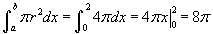
which we can verify directly from the formula for the
volume of a cylinder.
2. A cone
Select the second example from the drop down menu. Here the only change is that f (x) = x. Move the x slider and notice that the radius of our slice now changes. In this case, the radius is just the value of f for a particular x, which is just x. So the integral becomes
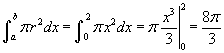
which you can also verify using the geometry formula for the
volume of a cone.
3. Revolving a parabola
Select the third example from the drop down menu, showing f (x) = Move the x slider to see how the radius of the disc changes as x changes. Here, the radius of the disc is x², so the integral becomes
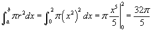
In summary, when the axis of revolution and the lower function are both the
x axis, the integral is
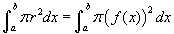
4. Cylinder with a hole
Select the fourth example, showing a cylinder with a hole. This is the first example again, but now g(x) = 1. The yellow rectangle doesn't extend all the way to the axis of revolution, so there is a hole in the cylinder. Our gray disc has become a washer. The easiest way to think about this is to find the area of the cylinder, then find the area of the hole, then subtract. We know the integral for the area of the outer cylinder (see example 1, above). The integral for the hole is similar, but with a smaller radius. Hence the problem becomes:
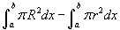
where
R ("big R") is the outer radius and
r ("little r") is the radius of the hole. For this problem, we get:
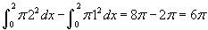
.
5. Cylinder with a cone-shaped hole
Select the fifth example, showing a cylinder with a cone-shaped hole. Drag the x slider to see how the washer changes as x changes. Big R is just 2, as before, but now little r (the radius of the hole) changes and is g(x) = x. So the integrals are:
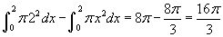
.
6. Odd shape
Select the sixth example, showing an odd shape that is revolved around the x axis. Move the x slider to get a feel for the shape that is generated when the yellow area is revolved. Using our two integrals we get:
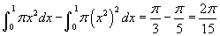
.
7. Odd shape with r and R reversed
Select the seventh example, showing a different odd shape. This is the same functions and axis as the previous example, but now the limits of integration have shifted. Note that this changes which function is big R and which is little r. If you just use the same formula as the previous problem with new limits, you will get a negative volume. To make the volume come out positive, we need to change big R to be the function that is furthest from the axis of revolution. Hence the integrals are:
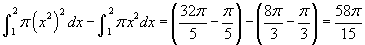
.
Odd shape with new axis
Select the eigth example, showing the original odd shape, but now the axis of revolution has shifter to y = 1. Move the x slider to get a feel for the shape of the volume. Big R in this case is the distance from the axis to g(x), so R = 1 -x². Similarly, little r (the radius of the hole) is the distance from the axis to f (x) so r = 1 - x. Hence the integrals become:
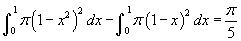
Notice the use of parentheses to make sure that
R and
r get squared properly.
9. Odd shape with vertical axis
Select the ninth example. This shows the original odd shape, but now it it revolved around the vertical axis. Note that the functions are now functions of y instead of x. Move the y slider to see how the washer changes. The overall shape is sort of a bowl. The integrals are:
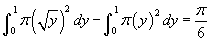
We can revolve areas around vertical axis, just like around horizontal axis. Notice that the volume comes out different when compared to example 6 (the same shape revolved around the
x axis).
10. Explore
Select the tenth example. You can enter your own functions, pick an axis, and change the limits. You can also click the inverse check box to make the axis vertical, but then you also have to rewrite your function definitions in terms of y instead of x.
Other 'Applications of Integration' topics
(C) 2011 Copyright Math Open Reference.
All rights reserved